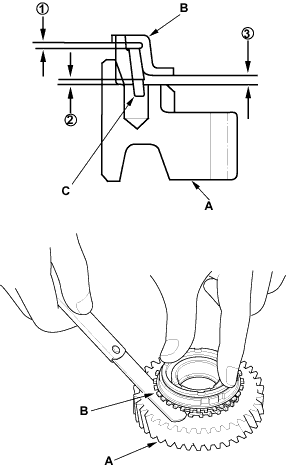
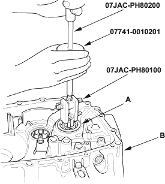
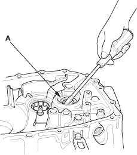

- Measure the clearance between each gear (A) and its synchro ring (B) all the way around. Hold the synchro ring against the gear evenly while measuring the clearance. If the clearance is less than the service limit, replace the synchro ring and gear.
Double cone synchro and triple Cone Synchro-to-Gear Clearance
Standard:
(1): Outer Synchro Ring (B) to Synchro Cone (C)
0.70 - 1.19 mm (0.028 - 0.047 in.)
(2): Synchro Cone (C) to Gear (A)
0.50 - 1.04 mm (0.020 - 0.041 in.)
(3): Outer Synchro Ring (B) to Gear (A)
0.95 - 1.68 mm (0.037 - 0.066 in.)
Service Limit:
(1): 0.3 mm (0.012 in.)
(2): 0.3 mm (0.012 in.)
(3): 0.6 mm (0.024 in.)


Special Tools Required
- Oil seal driver, 07JAD-PL90100
- Adjustable bearing puller, 20 - 40 mm, 07JAC-PH80100
- Attachment, 42 x 47 mm, 07746-0010300
- Driver, 07749-0010000
- Slide hammer, 07741-0010201
- Bearing remover shaft, 07JAC-PH80200
- Remove the differential assembly.
- Remove the ball bearing (A) from the clutch housing (B) using the special tools.

- Remove the oil seal (A) from the clutch side.
